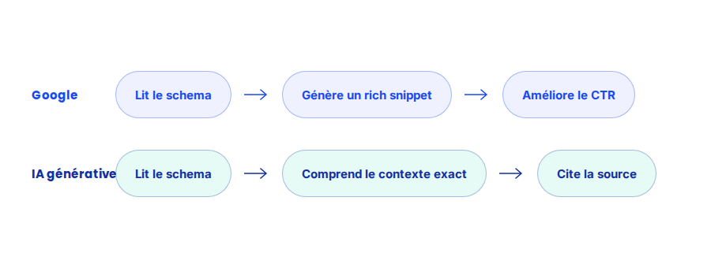

Données structurées : le langage commun entre Google et les IA génératives
Les données structurées ont longtemps été perçues comme un simple levier de rich snippets dans les résultats Google. Avec la montée des IA génératives et des AI Overviews, elles deviennent quelque chose de plus fondamental : un langage commun qui aide les machines, moteur de recherche ou modèle de langage, à comprendre sans ambiguïté ce qu'une page dit.
Le balisage schema.org existe depuis plus d'une décennie, porté à l'origine par un consortium regroupant Google, Bing, Yahoo et Yandex. Son utilité a longtemps été cantonnée à l'affichage — étoiles d'avis, prix, FAQ dépliables dans les résultats de recherche. Avec les IA génératives, son rôle s'élargit à quelque chose de plus structurant.
Ce qui ne change pas
La syntaxe et les types de schema.org restent globalement stables : Article, FAQPage, Product, Organization continuent de fonctionner comme avant. Cette continuité s'inscrit dans la logique plus large du GEO — la plupart des bonnes pratiques SEO historiques restent valables, elles prennent simplement une importance renouvelée à mesure que les IA génératives s'appuient sur les mêmes signaux structurels que les moteurs de recherche classiques.
Ce qui change vraiment avec la montée des IA génératives
- La donnée structurée réduit l'ambiguïté d'interprétation. Un modèle de langage qui doit extraire une réponse précise d'une page — un prix, une définition, une réponse à une question — s'appuie plus fiablement sur un balisage explicite que sur une inférence à partir du texte brut seul.
- Le type
FAQPagedevient particulièrement stratégique. Une question posée à une IA générative correspond souvent presque littéralement à une entrée de FAQ balisée — ce format est directement exploitable pour produire une réponse citable. - La cohérence entre le contenu visible et le balisage devient un prérequis, pas une option. Un schema qui ne correspond pas exactement au contenu affiché est un signal de mauvaise qualité, aussi bien pour Google que pour un modèle qui vérifierait la cohérence de la source.
- Les types
OrganizationetPersonrenforcent l'autorité perçue. Baliser clairement qui publie un contenu, avec quelles qualifications, aide les systèmes à évaluer la fiabilité d'une source avant de la citer.

Un exemple qui illustre bien la différence
Pour un site dont les pages contenaient des réponses FAQ rédigées uniquement en HTML classique, sans balisage FAQPage associé, l'ajout du schema correspondant — sans changer une ligne du contenu visible — a coïncidé avec l'apparition de plusieurs de ces réponses dans les AI Overviews de Google, alors qu'elles n'y figuraient pas auparavant.
Ce qu'il faut faire concrètement
- Balisez systématiquement vos FAQ avec le type
FAQPage, en veillant à ce que chaque question et réponse corresponde exactement au texte visible sur la page. - Ajoutez un balisage
OrganizationouPersoncohérent pour clarifier qui publie le contenu et renforcer les signaux d'autorité. - Validez systématiquement votre balisage avec l'outil de test de résultats enrichis de Google avant publication, plutôt qu'après coup.
- Ne balisez jamais un contenu que la page ne contient pas réellement — l'incohérence est plus pénalisante qu'une absence de balisage.
FAQ
Les données structurées garantissent-elles une citation par les IA génératives ?
Non, elles ne garantissent rien mais réduisent l'ambiguïté d'interprétation, ce qui augmente la probabilité qu'un contenu soit correctement compris et repris comme source fiable.
Faut-il baliser toutes les pages d'un site avec schema.org ?
Non, il vaut mieux prioriser les pages où le balisage apporte une réelle valeur — articles, FAQ, fiches produit — plutôt que d'appliquer un balisage générique et peu pertinent partout.
Le balisage schema.org remplace-t-il un bon contenu rédactionnel ?
Non, il vient renforcer un contenu déjà clair et bien structuré, il ne compense pas un contenu confus ou de faible qualité. Le fond reste la priorité, le balisage vient ensuite.
Envie d'auditer vos données structurées ?
Pour aller plus loin, voir la page Données structurées, la page GEO, et la page SEO & GEO, ce qui change vraiment.
Pour continuer sur ce sujet.